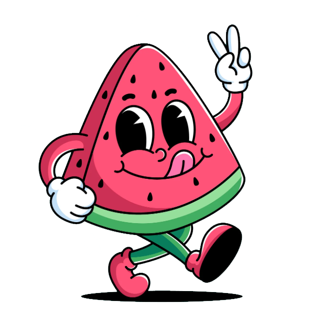

¡Bienvenidos!
Sumérgete en nuestra pasión por la sandía con recetas frescas, ideas creativas y experiencias únicas. Desde tartas exóticas hasta helados refrescantes, nuestra inspiración no tiene límites. Disfruta de videos que resaltan el color y sabor de la sandía, y explora opciones para hacer de tu evento algo especial. Descubre cómo reinventamos esta fruta en cada receta y déjate llevar por la frescura y versatilidad de WatermelonEnterprise. ¡La frescura nunca fue tan emocionante!
Explora más
Descubre nuestros servicios y contenido exclusivo. Reserva tu evento, inspírate con nuestras recetas, o conoce más sobre nosotros.
Haz tu reserva
¿Listo para un evento refrescante? Reserva fácilmente con nosotros !Ahora mismo!.
Reservar ahoraMira nuestro video
Aprende más sobre nosotros y descubre lo que hace única a WatermelonEnterprise.
Ver videoExplora nuestras recetas
Desde tartas hasta granizados, tenemos recetas perfectas para cada ocasión.
Ver recetasGalería de Inspiración